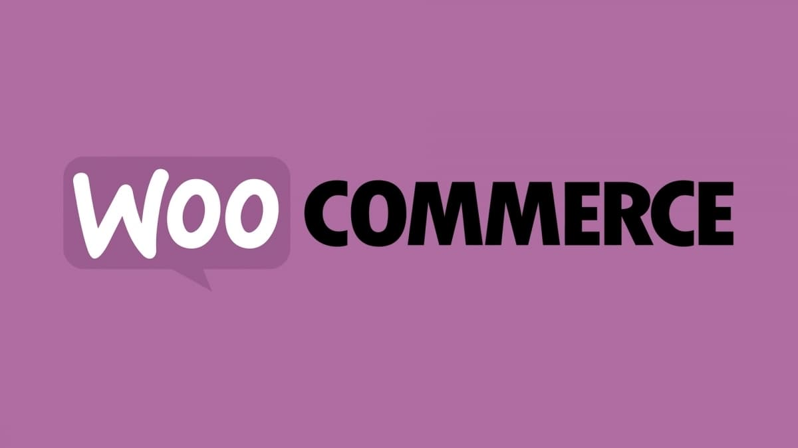

WooCommerce
Описание
WooCommerce — это плагин для WordPress, превращающий любой сайт на этой CMS в полноценный интернет-магазин. Ядро плагина бесплатное, open-source, и на нём работает более 20% всех онлайн-магазинов в мире. WooCommerce поддерживает простые и вариативные товары, цифровые загрузки, групповые товары, внешние/партнёрские товары и подписки (через расширения). Управление запасами, отзывы, рейтинги, уведомления о низком остатке — всё встроено в ядро.
Для кого подходит
WooCommerce оптимален для малого и среднего бизнеса, особенно если вы уже работаете на WordPress или ваша стратегия опирается на контент-маркетинг и SEO. Платформа подходит брендам, которым нужен контроль над каждой деталью магазина и которые готовы инвестировать время в техническое обслуживание. Реалистичные расходы: $30–80/мес для базового магазина, $100–200+/мес для продвинутой конфигурации с платными расширениями.
Интеграция с WordPress
WooCommerce встроен в экосистему WordPress — самую популярную CMS в мире. Это значит, что блог, лендинги, SEO-инструменты, медиатека и редактор контента работают в едином интерфейсе с магазином. Контент-маркетинг и коммерция объединены: вы можете вести блог, публиковать обзоры продуктов и направлять трафик прямо на витрину.
